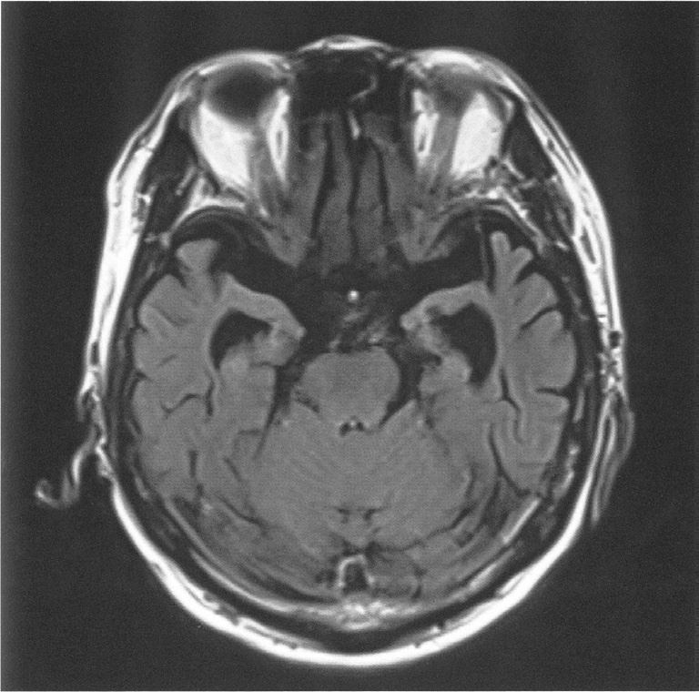
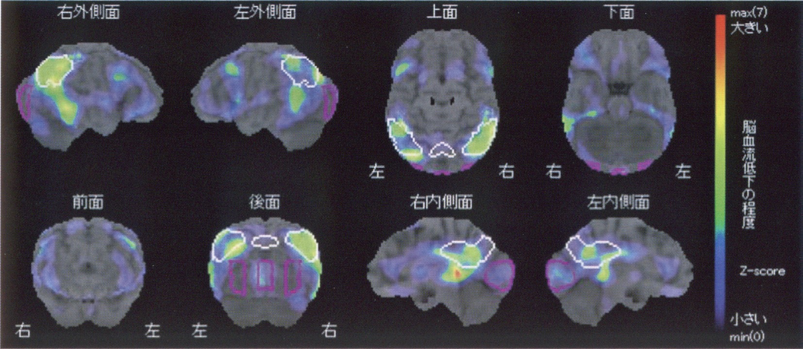
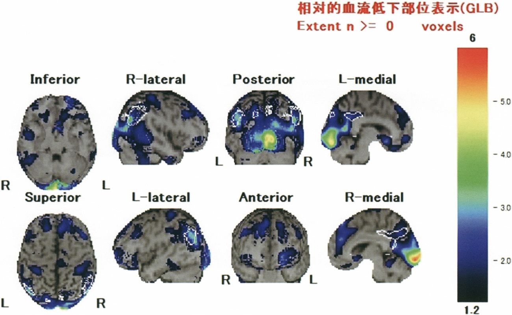
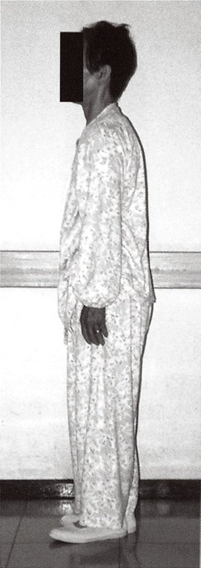

| 疾患 | 特徴 | L-dopa効果 |
| Parkinson病 | 安静時振戦・固縮・無動・姿勢反射障害 | 著効 |
| PSP（進行性核上性麻痺） | 垂直眼球運動障害・姿勢反射早期障害・転倒 | 軽度 |
| MSA（多系統萎縮症） | 失調＋Parkinsonism＋自律神経 | 一時的 |
| CBD（大脳皮質基底核変性症） | 非対称性・他人の手症候・失行 | 無効 |
| DLB（Lewy小体型認知症） | 変動する認知症・幻視・REM睡眠行動障害 | 有効 |

| 特徴 | 内容 |
| 階段状悪化 | 梗塞発作毎に悪化（Alzheimer型は徐々に進行） |
| 運動障害を伴う | 片麻痺・仮性球麻痺・尿失禁 |
| 50歳台でも発症 | （50歳代以下は稀だが発症はあり得る） |
| 脳血流SPECT | びまん性・局所性の血流低下 |
| MRI・MRA異常 | 梗塞巣・血管病変が通常みられる |
| 疾患 | 特徴 | L-dopa効果 |
| Parkinson病 | 安静時振戦・固縮・無動・姿勢反射障害 | 著効 |
| PSP（進行性核上性麻痺） | 垂直眼球運動障害・姿勢反射早期障害・転倒 | 軽度 |
| MSA（多系統萎縮症） | 失調＋Parkinsonism＋自律神経 | 一時的 |
| CBD（大脳皮質基底核変性症） | 非対称性・他人の手症候・失行 | 無効 |
| DLB（Lewy小体型認知症） | 変動する認知症・幻視・REM睡眠行動障害 | 有効 |
| 薬剤 | 機序・目的 |
| L-dopa（レボドパ） | ドパミン前駆体→第一選択 |
| ドパ脱炭酸酵素阻害薬（カルビドパ） | 末梢でのL-dopa変換を抑制→脳内移行増加 |
| MAO-B阻害薬（セレギリン） | ドパミン分解抑制→L-dopa効果延長 |
| ドパミン受容体遮断薬（ハロペリドール） | 禁忌（薬剤性Parkinsonismを起こす） |
| AChE阻害薬（ドネペジル） | Alzheimer病（Parkinson病ではない） |


| 疾患 | 特徴 | L-dopa効果 |
| Parkinson病 | 安静時振戦・固縮・無動・姿勢反射障害 | 著効 |
| PSP（進行性核上性麻痺） | 垂直眼球運動障害・姿勢反射早期障害・転倒 | 軽度 |
| MSA（多系統萎縮症） | 失調＋Parkinsonism＋自律神経 | 一時的 |
| CBD（大脳皮質基底核変性症） | 非対称性・他人の手症候・失行 | 無効 |
| DLB（Lewy小体型認知症） | 変動する認知症・幻視・REM睡眠行動障害 | 有効 |
| 認知症 | 特徴 |
| Alzheimer型 | 記憶障害・徐々に進行・海馬萎縮 |
| DLB | 幻視・変動・Parkinsonism・MIBG低下 |
| FTD/Pick病 | 人格変化・常同行動・前頭葉萎縮 |
| 脳血管性 | 階段状悪化・運動障害・MRI梗塞 |
| NPH | 3徴（歩行・認知・尿失禁）・タップテスト改善 |

| 疾患 | 特徴 | L-dopa効果 |
| Parkinson病 | 安静時振戦・固縮・無動・姿勢反射障害 | 著効 |
| PSP（進行性核上性麻痺） | 垂直眼球運動障害・姿勢反射早期障害・転倒 | 軽度 |
| MSA（多系統萎縮症） | 失調＋Parkinsonism＋自律神経 | 一時的 |
| CBD（大脳皮質基底核変性症） | 非対称性・他人の手症候・失行 | 無効 |
| DLB（Lewy小体型認知症） | 変動する認知症・幻視・REM睡眠行動障害 | 有効 |
| 認知症 | 鑑別ポイント |
| Alzheimer型 | 記憶障害先行・物盗られ妄想・海馬萎縮 |
| DLB | 幻視・変動・Parkinsonism・MIBG↓ |
| FTD/Pick病 | 人格変化・脱抑制・前頭葉萎縮 |
| NPH | 歩行・認知・尿失禁→タップテスト改善 |
| 薬剤 | 適応 |
| ドネペジル（AChE阻害） | 軽度〜高度 |
| ガランタミン（AChE阻害） | 軽度〜中等度 |
| リバスチグミン（AChE阻害） | 軽度〜中等度（貼付薬あり） |
| メマンチン（NMDA拮抗） | 中等度〜高度 |